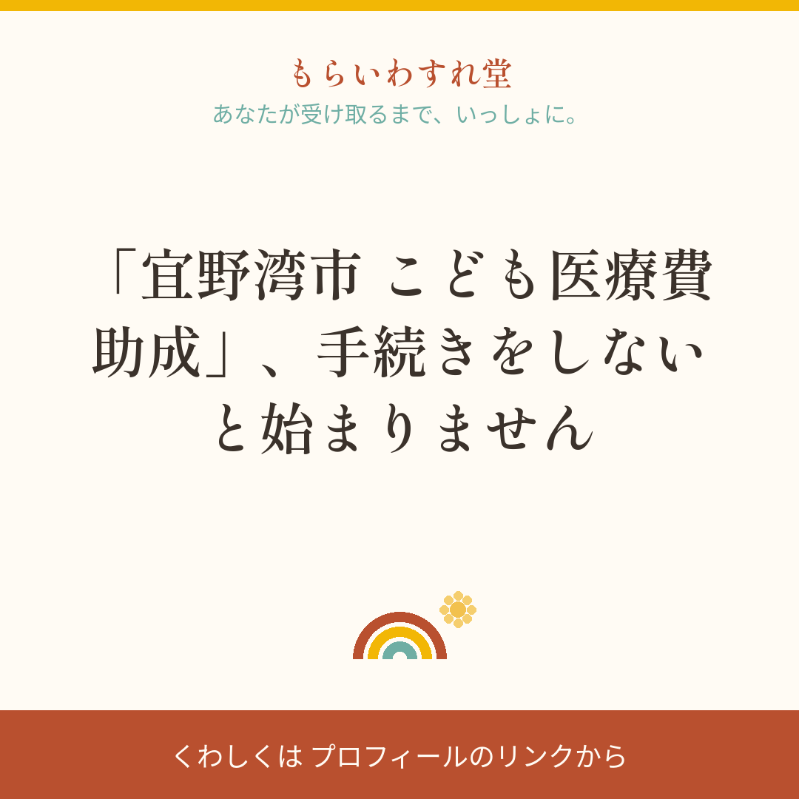

🌈 今週のIG投稿案(2026-W46)
更新: 2026-11-09 / 毎週月曜に自動更新 / このページは検索に載らない内部ページです
遥さんの3分ルーティン(投稿画像も完成品です)
① 画像を長押しで保存 → ② 「キャプションをコピー」→ ③ Instagramに投稿(画像+キャプション貼り付け)
④ 投稿したら、投稿案メールに返信で「案1 投稿した」と一言(使わない案は「案4 なし」)
※LINEはこちらから送る専用で、返信を受け取れません
⭐ 目安は週2本(火・金の20時ごろ)。⚠️の注意だけ守れば、どの案を選ぶかは遥さんにお任せです
🎨 画像やキャプションを直したいときは、そのままLINEで一言ください(次週から反映します)
案1
「宜野湾市 こども医療費助成」、手続きをしないと始まりません

🖼 画像はこのまま使えます: 長押し(PCは右クリック)→保存→Instagramへ
✅ 原文と照合ずみです(2026-08-06時点)ここに書いてある範囲は、こちらで公式ページと突き合わせています。改めて読み直さずに使っていただいて大丈夫です。
ただし「要確認」と書いてある項目だけは断定しないでください(制度はあるが、金額や条件までは詰め切れていない、という意味です)。
- 制度名
- 宜野湾市 こども医療費助成
- どこの制度か
- 宜野湾市
- だれが対象か
- 宜野湾市に住み健康保険に加入している18歳(高校生年代)までのお子さんがいる世帯が対象となる可能性があります(令和7年10月〜拡大)
- いくら
- 令和7年10月から18歳(高校生年代・年度末)までの通院・入院の医療費(保険診療分)が窓口無料(現物給付)になりました(要確認)
- どこへ申し込むか
- 宜野湾市 こども企画課(こども医療費助成担当)窓口またはオンライン申請
- いつまで
- 常時
子育て中のご家庭に、知らないままの方が多い制度です。「宜野湾市 こども医療費助成」。宜野湾市に住み健康保険に加入している18歳(高校生年代)までのお子さんがいる世帯が対象となる可能性があります(令和7年10月〜拡大)。申し込みの窓口は宜野湾市 こども企画課(こども医療費助成担当)窓口またはオンライン申請。金額や細かい条件は年度で変わることがあるので、このページでご確認ください。「うちは対象かな?」と思ったら、まず公式ページを見てみてください。
#もらいわすれ堂 #宜野湾市 #子育て #医療費 #宜野湾市こども医療費助成
⚠️ 投稿前の注意: 金額・期限・対象条件は本文に書かない(照合日 2026-08-06 時点の記録に基づく案のため)。「対象になることがあります」の言い方を崩さない。制度ID fk-ginowan-kodomo-iryo
出典: 公式ページを開く
投稿の最終判断は遥さん・小柳さんにお任せします(ここは提案まで)。文面の相談はチャットへいつでもどうぞ。